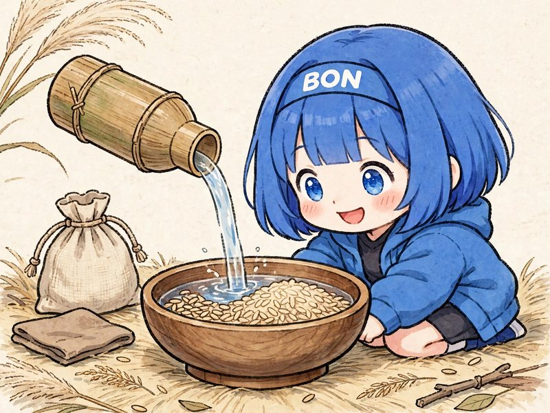
干飯(ほしいい)兵糧
炊いたお米を乾かして、日持ちするようにした携帯食。水やお湯でふやかして食べた。戦に出るときは、袋に入れて腰に下げたよ。
- ちなみに
- 平安時代から、旅や戦の食べ物として知られている
ひょえボンほしいい、おみずでふわふわ。ボン、これなら、どこでもごはんが食べられるよ！
SAKUSHA BON’S FAVORITES
よくぞ参られた、見学者よ。ここでは、さくしゃボンの好きなものを、我輩たちボンが説明しよう。
さくしゃボンの好きなものは、戦国時代・大航海時代・エスニック(民族衣装・民族音楽)・民俗学・鍼灸・民間療法・マッサージ(得意)である。
ごはんの話を中心に、ボンの世界の話としてまとめています。民族衣装のボンの絵は、準備ができたものから順に入れていきます。
戦国の人々は、戦のあいだも食べ物を工夫して持ち歩いた。にじボンと仲間たちが、戦国の兵糧と暮らしを紹介しよう。
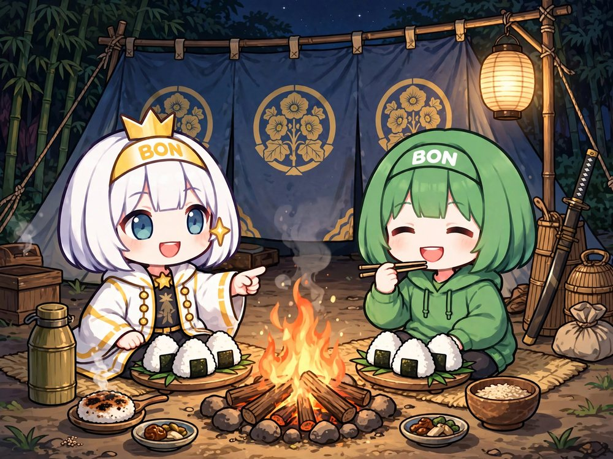

炊いたお米を乾かして、日持ちするようにした携帯食。水やお湯でふやかして食べた。戦に出るときは、袋に入れて腰に下げたよ。
ひょえボンほしいい、おみずでふわふわ。ボン、これなら、どこでもごはんが食べられるよ！
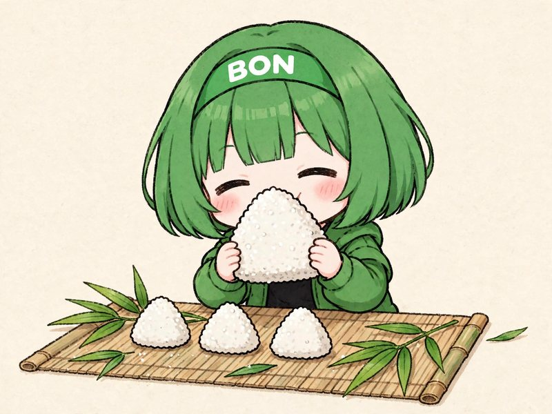
塩をつけて握り、竹の皮や笹の葉に包んで持ち歩いた。今のように具やのりが入るのは、もう少しあとの時代だといわれているよ。
もぐボン塩だけでも、お米の甘さが出ておいしいんだよね。うち、竹の皮のにおいも好きだな。
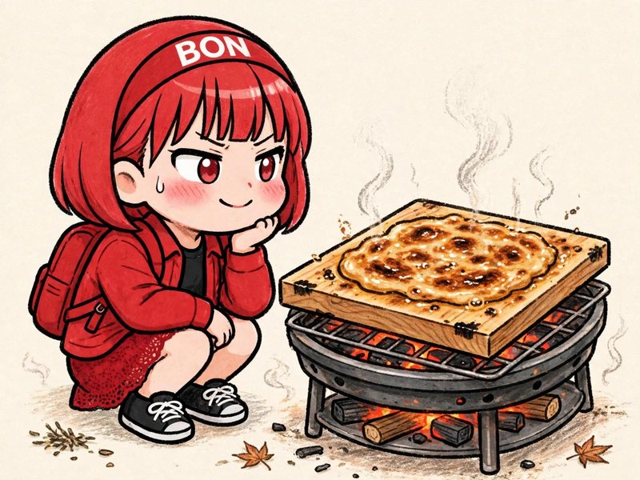
味噌を板や葉にぬって、あぶって香ばしくした保存おかず。味噌は塩分もたんぱく質もとれる、大事な食料だった。
おこボンごはんが進むのは認めてあげる。……べ、別に褒めてないからね。
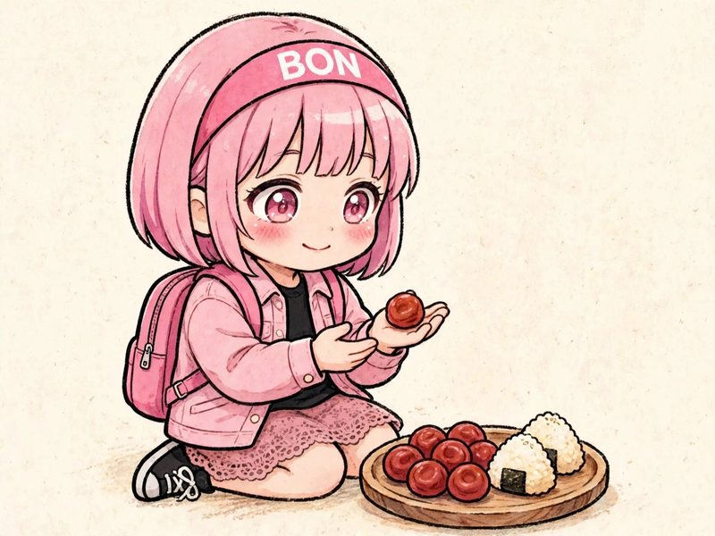
塩分の補給や疲れとりに役立ち、傷みにくい。「梅はその日の難逃れ」という言い習わしもあるよ。
てれボン小さな実なのに、頼もしくて…… なんだか、詩になりそうです。
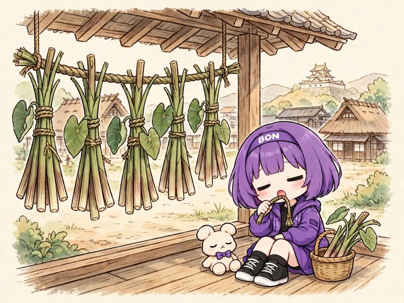
サトイモの茎(ずいき)を味噌で煮て、縄のように編んで乾かした保存食。いざというとき、ちぎって煮て食べたとされる。
ねむボン食べられる縄って、夢みたいだなあ。……ちょっとかじっていい？
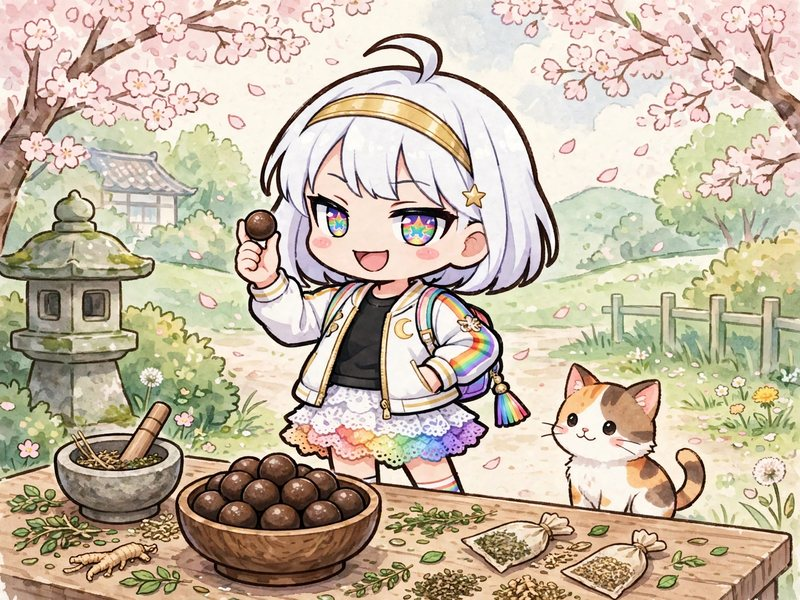
そば粉や米粉、薬草、砂糖などを丸めた携帯食。忍者の食べ物というイメージがあるが、作り方や使い道は書物によってさまざまで、諸説ある。
にじボン小さき丸に、知恵が詰まっておる。かじれば力が湧く……ような気がするのが、また良いのだ。
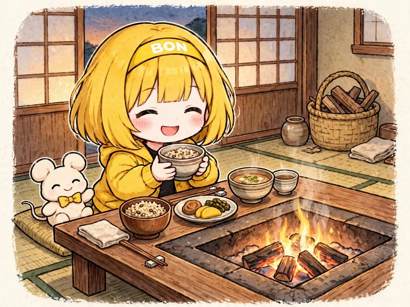
戦国のころは、朝と夕方の一日二食が基本だったといわれる。戦のときには、間にもう一度食べることもあった。
にこボン二回だけって、おなかすきそう！ でも、そのぶんみんなで食べるごはんは特別だったのかも。
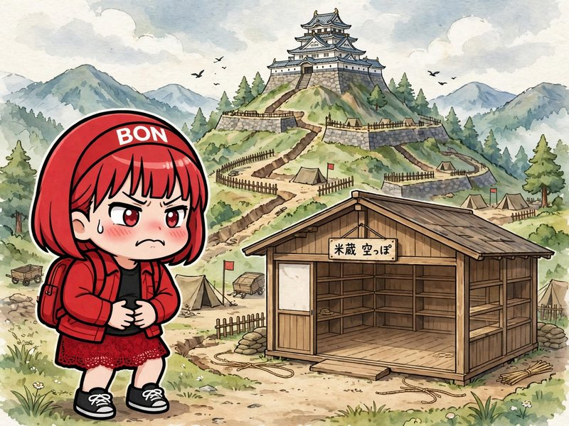
城を取り囲んで食料の補給を断ち、降参させる戦い方。豊臣秀吉の鳥取城攻め(1581年)では、城の中の食料が尽きて大変なことになったと伝わる。
おこボンおなかをすかせて戦うなんて、考えただけで腹が立つわ。……ごはんは、大事にしなさいよ。
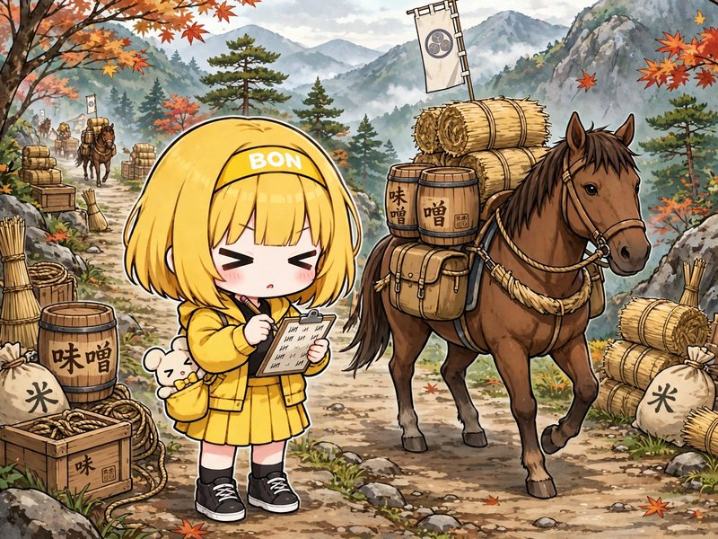
軍の食料や武具を運ぶ部隊のこと。米や味噌、塩などを馬や人が運び、戦を支えた。
にこボン運んでくれる人がいるから、みんなごはんが食べられるんだね。わたし、ありがとうって言いたいな！
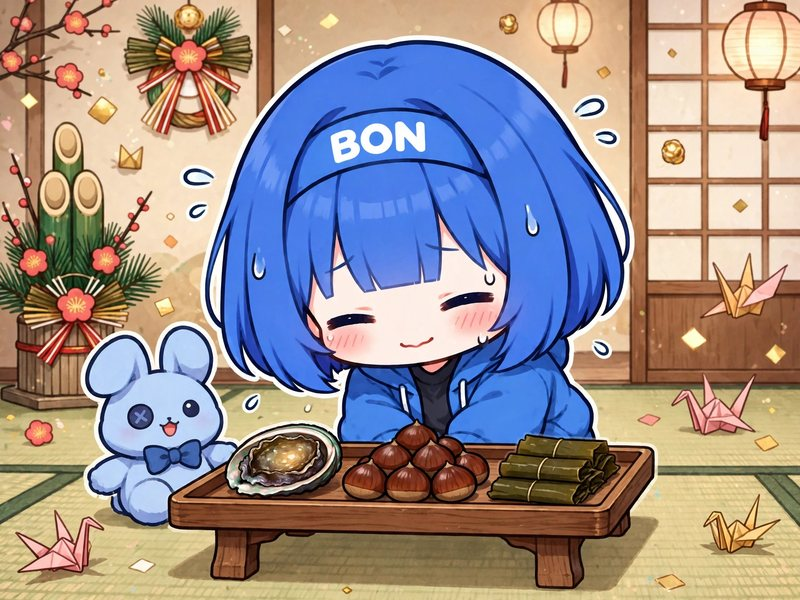
出陣のときは、打ち鮑・勝ち栗・昆布を用意して祝う習わしがあった。「勝つ」「勝ち」「喜ぶ」にかけた縁起物。
ひょえボンおいわい…… ボン、ちょっとどきどき。おじぎ、じょうずにできるかな。
船が世界をつないだ時代、食べ物も世界を旅した。香辛料から南蛮菓子まで、ボンたちの目線で見てみよう。
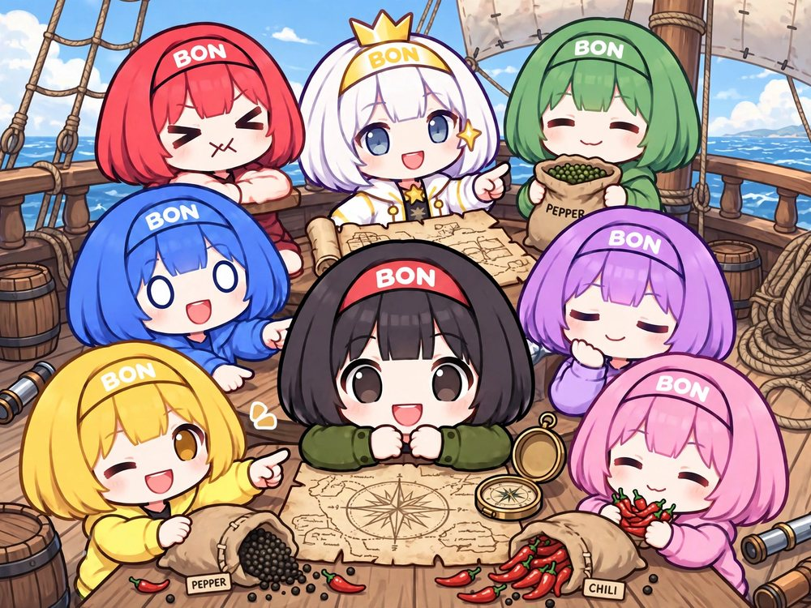

胡椒やシナモンなどの香辛料は、昔のヨーロッパでは高価で貴重なものだった。1498年、ヴァスコ・ダ・ガマがインドのカリカットに着き、船で行く香辛料の道が開かれた。
にじボン一粒の胡椒が、海を越えさせたのだ。食の力とは、げに恐ろしい。

コロンブスのあと、アメリカ大陸が原産のトマト・じゃがいも・トウモロコシ・唐辛子・カカオが世界に広まった。日本にも、唐辛子は16世紀ごろに伝わったとされる。
おこボン唐辛子が世界に広がったのは、この時代のおかげ。……ちょっとだけ感謝してあげる。

長い航海では、堅く焼いたパン(ビスケット)や塩漬けの肉、干した魚が食べられた。ビタミンCが足りなくなって、壊血病になる船員も多かった。
もぐボン船の上のごはんは大変そう。うちなら、塩漬け肉でも美味しい煮込みにするよ。

1519年にマゼランの艦隊が5隻で出発し、1522年に1隻だけがスペインに帰ってきた。マゼランはフィリピンで亡くなったが、船は世界を一周したことになる。
にこボンすごい…… でも、無事に帰ってきたのが1隻だけって、聞いててドキドキしたよ。

1543年、ポルトガル人が種子島に着いて鉄砲が伝わった。そのあと、カステラや金平糖などの南蛮菓子もやってきた。織田信長は、宣教師フロイスから金平糖をもらったと伝わる。
ひょえボンこんぺいとう、きらきら…… ボン、これ、だいすき。

17世紀の初めごろから、オランダ東インド会社が中国や日本の茶をヨーロッパへ運んだ。コーヒーもエチオピア原産で、のちにヨーロッパに広まった。
ねむボンあったかい飲み物って、世界中で好かれてるんだね。ぼくはホットミルクが一番だけど。

江戸時代、長崎の出島にはオランダ商館があった。長崎では、和・華(中国)・蘭(オランダ)が混ざった卓袱料理が生まれたとされる。
にじボン東西の味が一つの卓に集う。まさに食の大航海であるな。我輩、実に感心したぞ。

じゃがいもは、1600年ごろにジャカルタ(ジャガタラ)から来たオランダ船で日本に伝わったといわれ、名前の由来になった。かぼちゃは、カンボジアから来たことが名前の由来という説がある。
にこボン名前に旅の跡が残ってるなんて、おもしろいね！ ポテトが好きなわたしは、じゃがいもの話にわくわくしちゃう。
ボンたちが、世界の民族衣装を着てみたよ。それぞれの国のごはんも一緒に紹介するね。
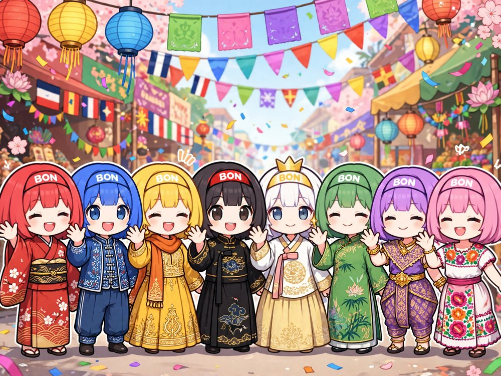
絵は準備ができたものから順に入ります。
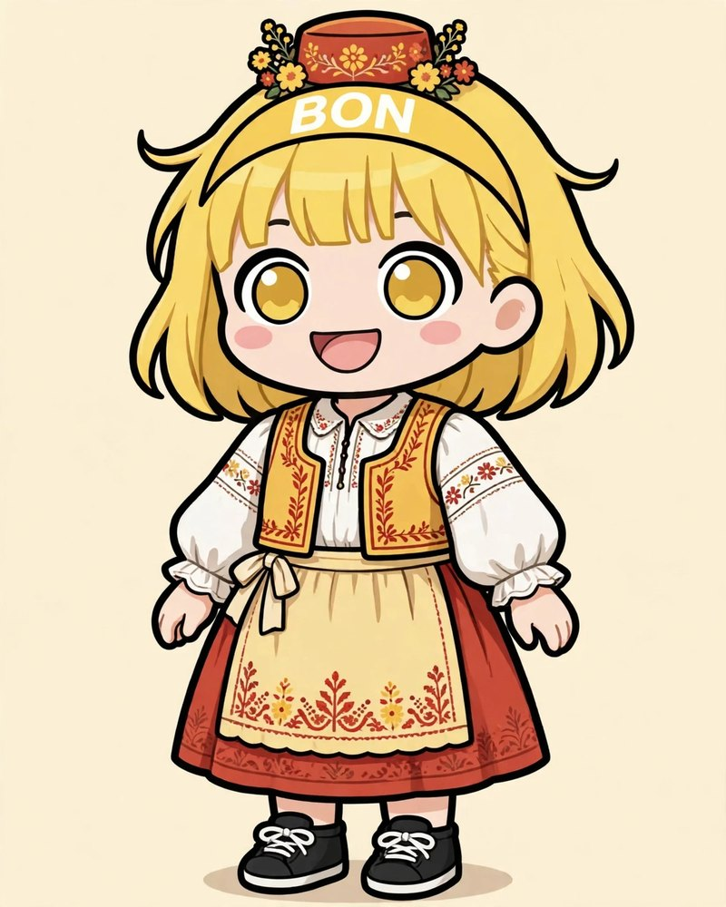
刺繍入りのベストや白いブラウス、エプロンつきのスカートなど、地方ごとにちがう民族衣装(フォルクドラクト)がある。
にこボン北欧のお祭りの衣装って、あったかい色でかわいいの！ ミートボールもシナモンロールも、みんなで分けて食べたいな。
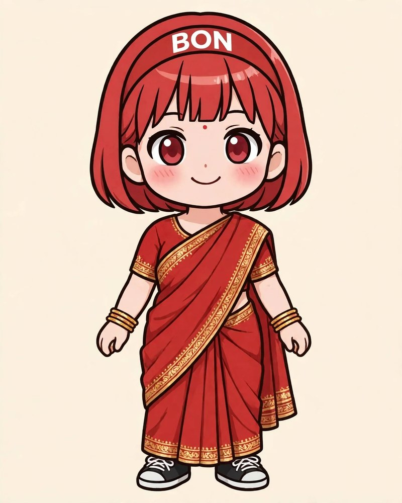
長さ5〜9メートルほどの一枚布を、体に巻きつけて着る。巻き方や布の柄は、地方によってさまざま。
おこボンふ、ふん。サリーの赤は悪くないわね。……カレーは別よ、辛いのは譲れないから。
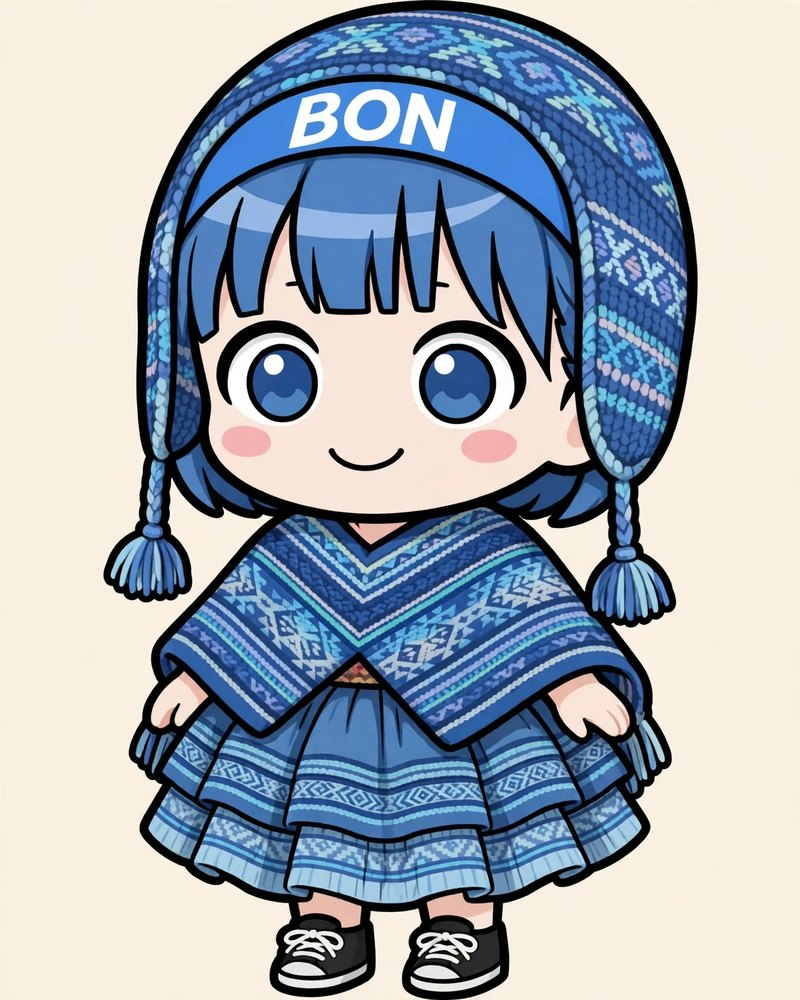
毛糸のポンチョや、耳当てつきの帽子チュヨ、重ね着のふくらんだスカート(ポジェラ)など。アルパカやリャマの毛でつくる。
ひょえボンあったかい…… ふわふわ。ボン、アルパカさんとお友だちになれるかな。
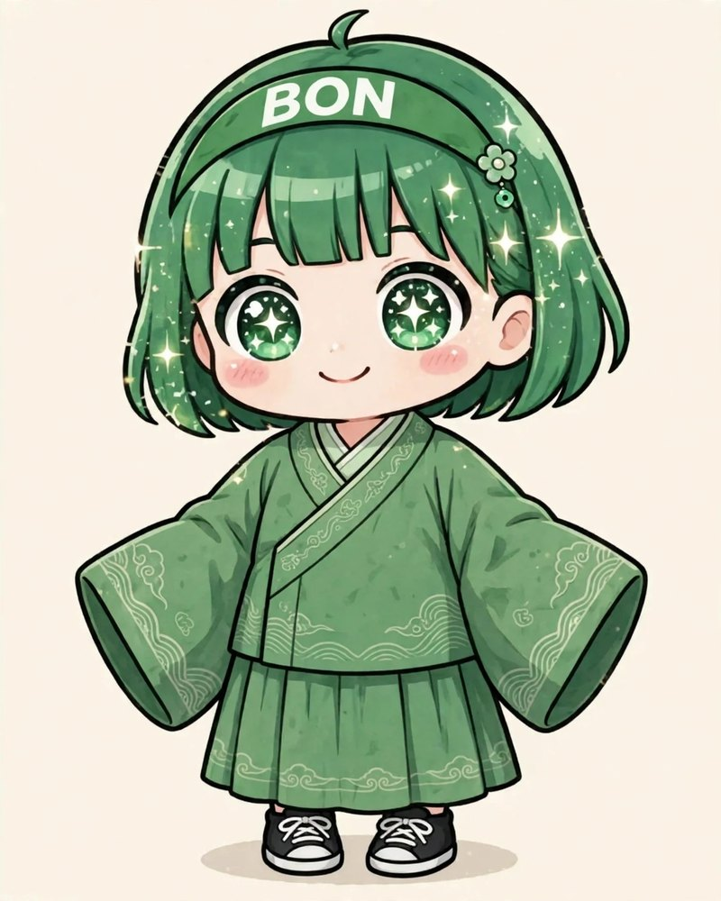
広い袖と、重ねた襟が特徴の長い衣。色や柄にも、いろいろな意味がこめられている。
もぐボン中国は食の宝庫だよ。うち、全部の地方の料理を作れるようになりたいな。
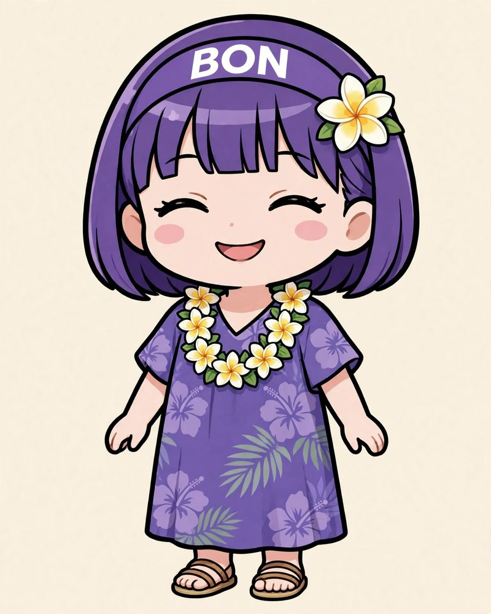
ゆったりした長いワンピースに、花の首飾り(レイ)。ハワイで広まった、風通しのよい服。
ねむボンぼく、ムームー好き。ゆったりしてて、そのまま寝られそうだよ。ロコモコ食べたら、ふぁ…… 眠くなっちゃう。
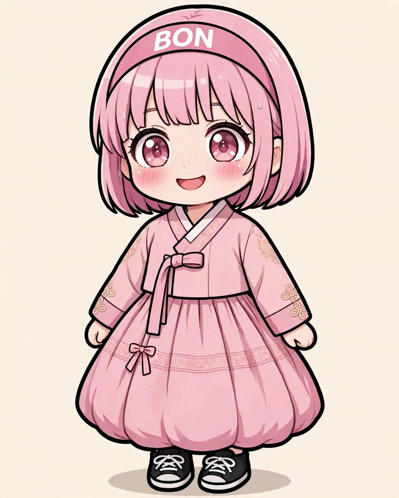
短い上着のチョゴリと、ふっくらしたスカートのチマ。色あざやかな生地で、動くたびにふわりと広がる。
てれボンき、着てみたら、思ったよりかわいくて…… あ、あんまり見ないでください……！
着物に袴と羽織を合わせた装い。明治から大正のころの文豪たちが、よく着ていたイメージの姿。
にじボン文豪たる者、和装は外せぬ。袴を翻して歩けば、我輩の背には虹ならぬ風が吹くのである。
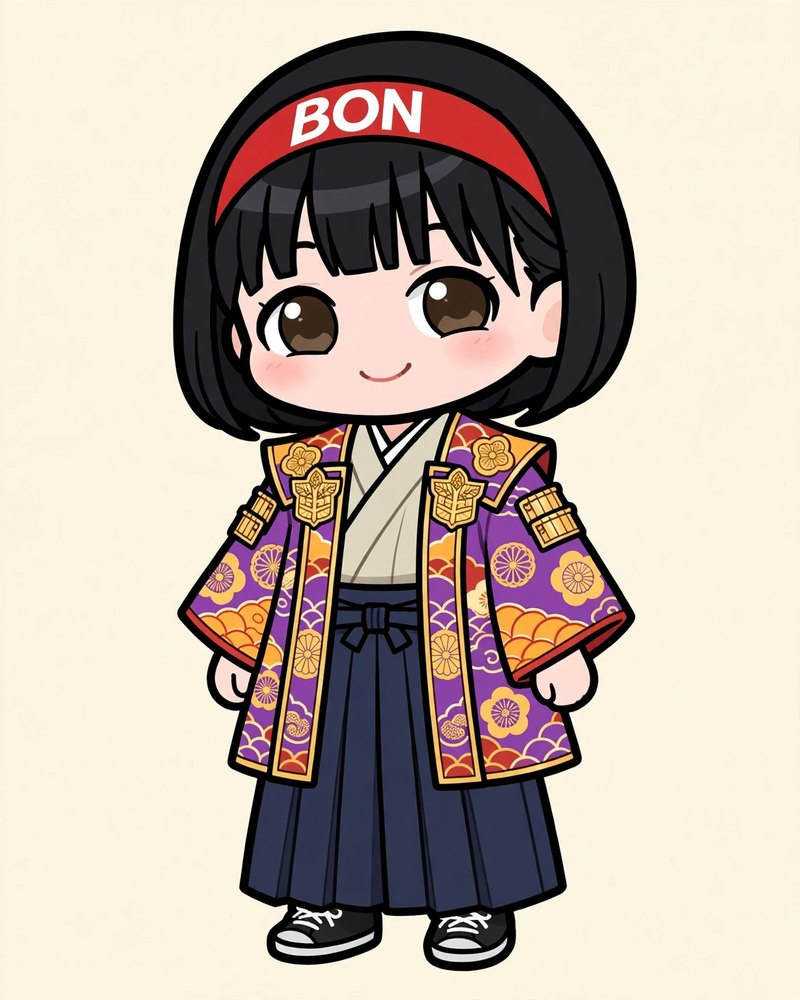
戦のとき、鎧の上にはおった上着。家紋や派手な柄を入れて、目立たせることもあった。
さくしゃボンわたし、戦国時代が大好きなんだ。陣羽織は派手だけど、着てみたら意外と気分が上がるよ。
ボンたちが、衣装の国の楽器と音楽を紹介するよ。耳をすませて、世界の音を想像してみてね。

鍵盤とキーのついた、スウェーデンの伝統的な弦楽器。弓でこすって弾き、ふしぎな深い響きがある。
にこボンお祭りで弾くと、みんなが自然に踊りだしちゃうんだって。わたしも踊りたいな！

シタールは、長い棹に弦を張ったインドの代表的な弦楽器。タブラは、手のひらと指で叩く小さな太鼓の組みあわせ。
おこボンシタールの音、嫌いじゃないわ。……スパイスの香りがしてきそうなのが、ちょっとくやしいけど。

ケーナは縦笛、サンポーニャは長さのちがう管をならべた笛(パンパイプ)。アンデスの高原に、澄んだ音が響く。
ひょえボンぴゅーって、風みたいな音。ボン、おみみがぽかぽかするよ。

2本の弦を弓でこすって弾く、中国の伝統的な楽器。人の声のような、切なく伸びる音色が特徴。
もぐボンおいしいごはんの席で二胡が流れてたら、うち、おかわりしちゃいそう。

小さな4弦のギターのような楽器。19世紀に、ポルトガルから来た移民が持ちこんだ楽器がもとになったといわれる。
ねむボンぽろんぽろんって、ゆったりした音。ぼく、聴きながら寝ちゃってもいいかな。

12本の弦をもつ、韓国の伝統的な琴。指で弦をはじいて、ゆるやかな音を奏でる。
てれボン弦をはじく音が、そっと胸に響きます。……私、詩の朗読に合わせてみたいです。

三味線は3本の弦を撥ではじく楽器、尺八は竹の縦笛、箏は13本の弦の琴。どれも日本の伝統音楽を支える楽器。
にじボン三味線の凛とした音、尺八の静かな息づかい。和の調べは、我輩の文筆にも欠かせぬのだ。

戦国時代の軍では、法螺貝や陣太鼓が合図に使われたといわれる。遠くまで響く音で、進軍や撤退を知らせた。
さくしゃボンわたし、法螺貝の音が好きなんだ。ぶおーって響くと、背筋がしゃんとするの。おこちゃんにも、ちょっとだけ吹いてみてほしいな。
昔からの暮らしや行事、言い伝え、そして言葉の雑学。民俗学の目で見ると、毎日のごはんや言葉にも物語がある。
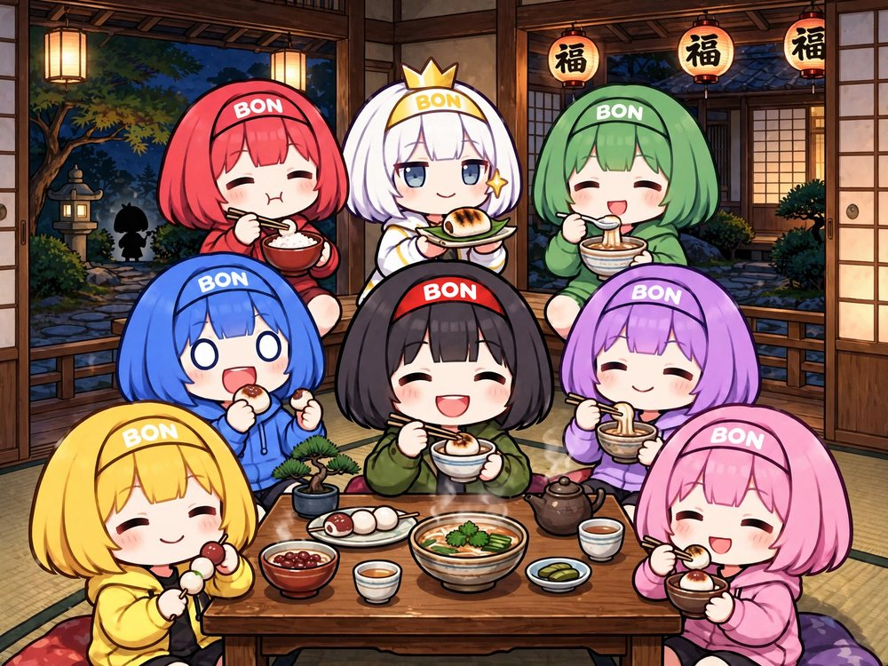

昔からの暮らし、行事、言い伝えなど、名もない人々が受け継いできたものを調べる学問。ごはんの食べ方や、特別な日の食べ物も、大切な手がかりになる。
にじボン書物に残らぬ暮らしにこそ、物語は宿るのだ。食卓も、立派な資料であるぞ。

「ケ」はふだんの日、「ハレ」は祭りや祝い事など特別な日のこと。お赤飯やお餅は、ハレの日の食べ物として食べられてきた。
にこボンふだんのごはんも好きだけど、ハレの日のごはんは、わくわくが全然ちがうよね！

1月7日の七草がゆ、冬至のかぼちゃとゆず湯など、季節の節目に食べるものや行うことがある。体をいたわる知恵でもある。
ねむボン冬至のかぼちゃ、ぼく好き。ゆず湯であったまって、ごはんを食べたら、ぐっすり眠れそうだよ。

1910年に柳田國男が出版した、岩手県遠野に伝わる話を集めた本。座敷わらしや河童など、不思議な存在の話が出てくる。
てれボン人の暮らしの隅にそっと住む、不思議な話…… 私、こういうの、詩にしたくなります。

その土地の気候や食材から生まれた、家庭や地域に伝わる料理。同じ名前でも、地域や家ごとに味がちがうことがある。
もぐボンうちの味って、みんなちがうよね。ボンたちの家のごはんも、いつか図鑑にしたいな。

立春の前日に、豆をまいて鬼を追い払い、福を呼びこむ行事。「鬼は外、福は内」と声を出す。
ひょえボンおに…… こわい。でも、豆をぱらぱらすると、ボン、ちょっとだけ強くなった気がする。

神社や家で、神様にお米・お酒・塩・水などをお供えする。供えたものをあとでいただくことを「直会(なおらい)」という。
てれボン神様と同じごはんを分けていただく…… 静かで、あたたかくて、いい習わしです。

川のそばで、しゃかしゃかと小豆を洗う音だけが聞こえる、という妖怪の言い伝え。日本各地に似た話がある。
にじボン暗き川辺で小豆を洗う者か。……そやつ、お赤飯の日には、ぜひ手伝ってほしいものだな。

「するめ」の「する」が、お金を「擦る」「掏る」を思わせるので縁起が悪い、と考えて、「あたり」に変えて「あたりめ」と呼ぶようになった、という説がある。刺身を「お造り」、ふぐを「ふく」と言いかえるのも、同じ縁起担ぎ。
ひょえボンするめが、あたりめに！ ことばって、ふしぎ。ボン、あたりめ、かみかみするの、すき。

文化庁は、日本語についての人々の意識を調べる「国語に関する世論調査」を、平成7年度から毎年行っている。言葉の使い方や意味の理解が、どう変わっているかが分かる。
ねむボンぼく、言葉の調査が毎年あるなんて、知らなかったよ。みんなの言葉づかいって、ちょっとずつ変わるんだね。

昭和中期、米軍キャンプやキャバレーを回るジャズバンドの人たちの間で使われた、言葉を逆さにした隠語。「ジャズ」を逆さにした「ズージャ」が名前のもとになった。
さくしゃボンわたし、こういう業界の言葉って好きなんだ。ひっくり返すだけなのに、急に特別な言葉に聞こえるのが不思議だよね。

令和6年度の文化庁の調査では、「エモい」を使うことが「ある」と答えた人は17.8%、「ない」は80.6%だった。他の人が使うのが「気にならない」は56.7%、「気になる」は41.7%。
てれボン夕やけを見て「エモい」って思うこと、私もあります。うまく言えない気持ちに、名前がつくのは、うれしいです。

寿司屋の言葉は、職人たちが効率よくやりとりするために生まれたといわれる。「ネタ」は「たね」を逆さにした言葉、「シャリ」は、お釈迦様の遺骨(仏舎利)のように白く細かいことが由来とされる。
にこボンお寿司屋さんの言葉って、かっこいいよね。ボンたちも、「ネタ」「シャリ」って、使いこなしたいな！

結婚式では、「切れる」「別れる」など、別れを思わせる言葉を避ける習慣がある。「ナイフで切る」を「ナイフを入れる」、「終わる」を「お開きにする」と言いかえる。
おこボンふうん、「お開き」ってそういうことなのね。……べ、別に感心したわけじゃないけど、ちょっとおもしろいわ。
世界のあちこちで、昔から受けつがれてきた体のいたわり方を紹介するよ。文化・歴史の紹介だから、治療の代わりにはならないよ。

中国から伝わった医学が、日本で独自に発展したもの。草や木の根、鉱物などの「生薬(しょうやく)」を組みあわせて使う。
おこボン苦いのはあんまり得意じゃないわ。……でも、体のことをそんなに考えて組みあわせてるのは、立派だと思う。

インドで数千年続く伝統医学。「アーユル」は生命、「ヴェーダ」は知識という意味。食事・睡眠・生活習慣を整えることを大事にする。
にこボンスパイスって、料理にも体にも使われてきたんだね。お料理が好きな子が増えそう！

カップを肌に吸いつかせる伝統的な方法。中国、中東、ヨーロッパなど、世界のあちこちで古くから行われてきた。
ひょえボンまるくて、ぽこっとした跡がつくんだって。ボン、見るだけなら、へいき……かも。

温泉に何日も泊まって、体を休める日本の昔からの習慣。戦国時代には、武将が傷をいやす「隠し湯」の言い伝えもある。
ねむボン温泉、ぼく大好き。ぽかぽかして、お湯の中でそのまま眠っちゃいそうだよ。

ヨモギなどの薬草を煮た蒸気で、体を温める韓国の伝統的な方法。体を温める習慣として親しまれている。
てれボン日本のお灸と、同じヨモギなんです。国がちがっても、草のちからを大切にするのは、素敵です。

カモミールやミントなどの薬草を、お茶にして飲む習慣。ヨーロッパでは昔から、体をいたわる飲み物として親しまれてきた。
にじボン一杯の茶に、土地の知恵が溶けておる。我輩も、ミントティーの香りは嫌いではないぞ。
国ごとに、手の動かし方もちがうんだ。鍼灸も、ここでいっしょに紹介するよ。文化・歴史の紹介だから、効果を保証するものではないし、医療の代わりでもないよ。体の不調は、医療機関に相談してね。

さくしゃボンは、マッサージが得意。指圧はいま勉強中で、将来はアーユルヴェーダと鍼灸も学びたいと思っているよ。
さくしゃボンわたし、マッサージは得意なんだ。指圧はまだ勉強中だけど、いつかアーユルヴェーダと鍼灸もきちんと学べたらいいな。

指や手のひらで体を押す、日本で整えられた手技。日本では、「あん摩マッサージ指圧師」が国家資格になっている。
おこボン肩こりのときは、あの「ぐぐっ」がたまらないのよね。……べ、別に、行きたいとか言ってないけど。

体を押したり、のばしたりして、ヨガのような動きも取り入れるタイの伝統的なマッサージ。2019年には、ユネスコの無形文化遺産に登録された。
にこボンタイのマッサージって、ストレッチみたいなんだよね。ボンたちみんなで、受けてみたいな！

ハワイの伝統的なマッサージ。腕や手のひらをなめらかに動かして、波のように体をなでる。
ねむボン波みたいに、ゆっくり動くんだって。ぼく、これは絶対、受けながら寝ちゃうやつだ。

アーユルヴェーダで知られる、あたためたオイルを全身にぬるマッサージ。
てれボンあたたかいオイルが、体をゆっくり包むのですね。……想像するだけで、ほっとします。

なめらかな手の動きでなでたり、もんだりする、西洋で広まったマッサージの代表的なもの。
ひょえボンなでなで、ぎゅっぎゅ、ってするのかな。ボン、ふわふわしたのがいいなあ。

中国の伝統医学の手技。手や指で、押す、さする、つまむなど、いろいろな動きを組みあわせる。
もぐボン手の動き一つひとつに名前があるんだって。料理の包丁の使い方みたいで、うち、親近感わくな。

韓国のお風呂や銭湯で行われる、専用のタオルで肌の古い角質をこすり落とす習慣。サウナ「チムジルバン」もセットで楽しまれる。
てれボンひ、人にこすってもらうなんて、恥ずかしくて…… でも、すっきりするのは、ちょっと気になります。

トルコの伝統的な蒸し風呂。温かい石の台の上で体を温め、あかすりやマッサージを受けるのが定番。
にじボン石造りの浴場で、湯気に包まれる…… まこと、歴史の重みを感じる場であるな。一度、湯気の中で文を練ってみたいものだ。

鍼(はり)は、体の決まった点(ツボ)に細い針を当てる方法。灸(きゅう)は、もぐさを燃やして温める方法。どちらも、中国で生まれた伝統医学がもとになっている。
にじボン数千年の昔から続く知恵であるぞ。……しかし、これはあくまで文化の紹介。体の不調は、きちんと医者に相談するのだ。

体の中を流れるとされる「気」の通り道を経絡(けいらく)、その上にある点をツボ(経穴)という。ツボの場所は、世界保健機関(WHO)が国際的な標準を定めている。
てれボンツボって、名前も素敵なのです。「合谷」「足三里」…… 詩の題名にできそうです。

江戸時代の鍼医、杉山和一は、細い管を使って鍼を打つ「管鍼法」を考えたことで知られる。目が不自由だったが、将軍に仕え、鍼の学校も開いたと伝わる。
さくしゃボン江戸時代の人の工夫が、いまの鍼にまでつながってるなんて。わたし、そういうロマンのある話が好きなんだ。

もぐさは、ヨモギの葉の裏の白い綿毛を集めてつくる。滋賀の伊吹山のあたりは、ヨモギとお灸の産地として知られる。
もぐボンヨモギは草餅にもなるんだよ。うち、お灸の香りも、草餅の香りも、どっちも好きだな。

鍼灸で使う鍼は、とても細く、髪の毛くらいの太さのものもある。いまは、一度使ったら捨てる使い捨ての鍼が一般的。
ひょえボンはり…… ちくっとするのかな。ボン、こわいけど、先生がやさしかったら、だいじょうぶ、かも。

日本では、鍼をする人は「はり師」、灸をする人は「きゅう師」という国家資格を持っている。鍼灸は、世界のいろいろな国でも伝統医療として行われている。
にこボンちゃんと資格のある先生がいるんだね。安心して通えるのって、大事だよね！

朝起きたら首が痛い、あの「寝違え」。ボンたちの世界でも大事件で、ゲームにもなった。痛みが続くときは、医療機関に相談するのが安心。
ねむボンぼく、よく寝違えちゃうんだ。枕が合ってないのかなあ。……ゲームでは、なおしてもらったよ。